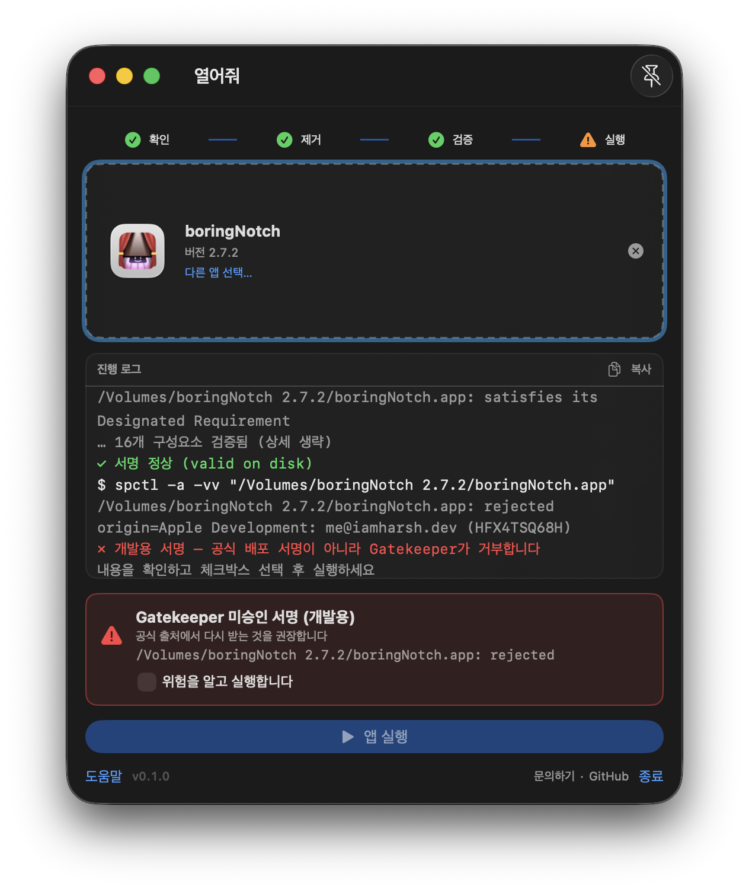
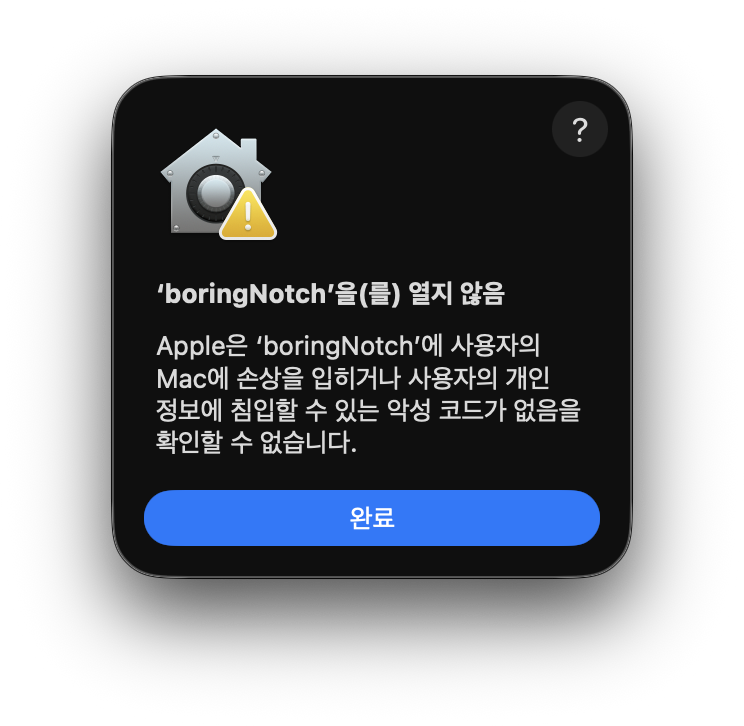

열어줘는 .app의 차단을 해제하고, 서명을 검증하고, Gatekeeper 평가까지 마친 뒤
직접 누른 실행 버튼으로만 엽니다. 변조된 앱은 빨간 경고에서 멈추고, 몰래 실행하지 않습니다.
무료 · macOS 14+ · Apple Silicon/Intel · 서명 없는 배포판이라 첫 설치 시 1회 수동 해제 필요

브라우저·메신저로 받은 앱에는 차단 속성(com.apple.quarantine)이 붙습니다.
그래서 시스템 설정 → 개인정보 보호 및 보안까지 들어가 “확인 없이 열기”를 눌러줘야 합니다.
열어줘는 그 심부름을 드래그 한 번으로 끝냅니다.
다운로드·압축 해제 직후 실행이 막히는 .app을 열 때.
앱이 손상된 게 아니라 차단 속성 문제인 경우를 빨리 처리할 때.
서명 깨짐은 빨간 카드에 파일까지 짚어줍니다. 판단은 당신이.
창에 드래그하거나 ⌘O로 파일을 선택합니다.
확인 → 제거 → 검증 → 평가, 실시간 로그와 함께 자동 진행.
통과 시 버튼 활성화, 경고 시 체크박스 확인 후 활성화. 자동 실행은 없습니다.
결과마다 할 일이 하나로 정해져 있습니다. 추측 금지.
| 메시지 | 의미 | 후속 처리 |
|---|---|---|
| 완료 차단 속성 제거됨 | 차단 해제 성공. | 그대로 진행. |
| 준비됨 서명 정상 + 통과 | 검사 전부 통과. | 실행 버튼으로 실행. |
| 경고 변조 의심 | 서명과 파일 불일치 (dylib 주입 등). | 빨간 카드 확인. 공식 출처 재설치 권장 — 그래도 쓰려면 체크박스 후 실행. |
| 경고 개발용 서명 | 개발 인증서 서명이라 배포로 인정 안 됨. 악성 아님. | 카드 확인 후 체크박스, 실행. |
| 차단 Gatekeeper 거부 | 변조 증거와 함께 평가 실패. | 실행 불가. 공식 출처에서 다시 받기. |
| 실패 차단 해제 실패 | 권한 문제 (주로 /Applications 안). | 다른 폴더(예: ~/Downloads)로 옮겨서 재시도. |

sudo 자동 승격 없음..dmg 처리 없음 (v1 범위 밖).